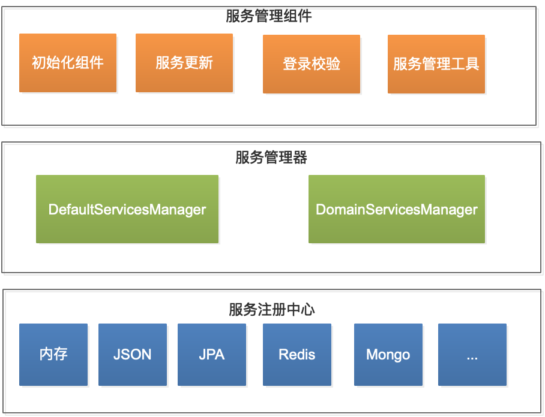
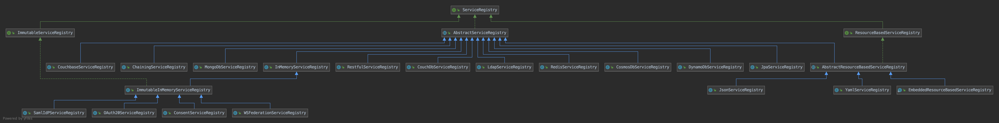
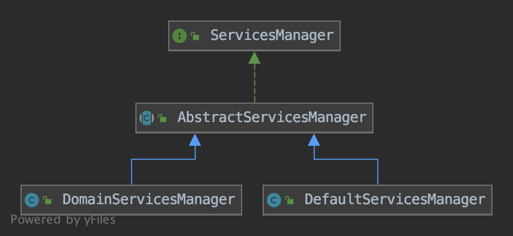
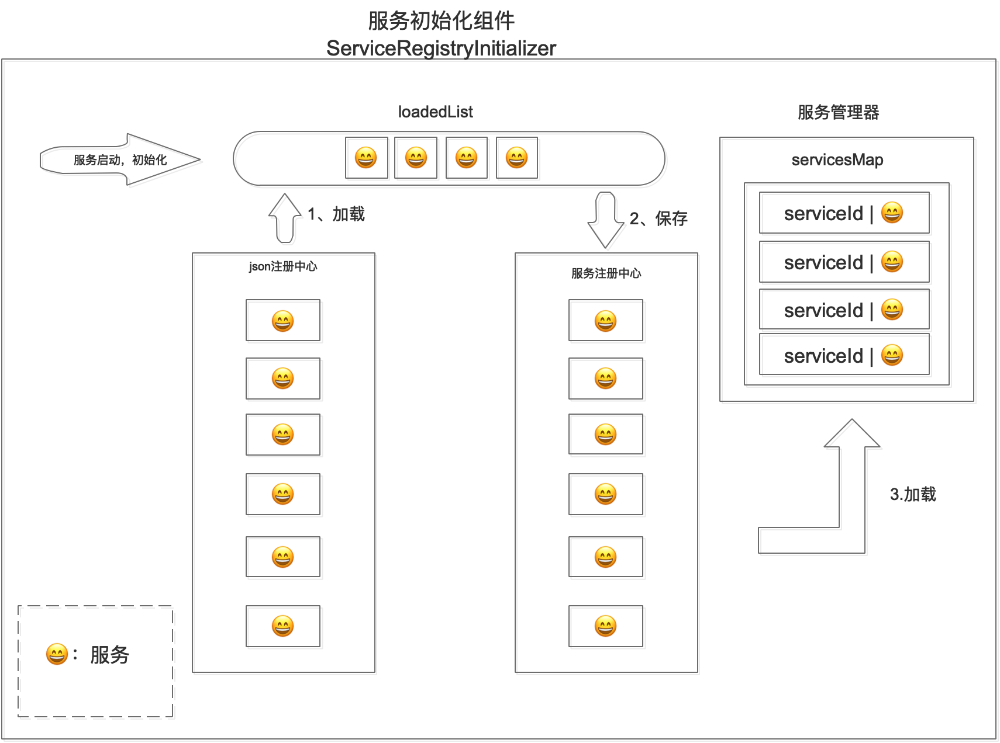
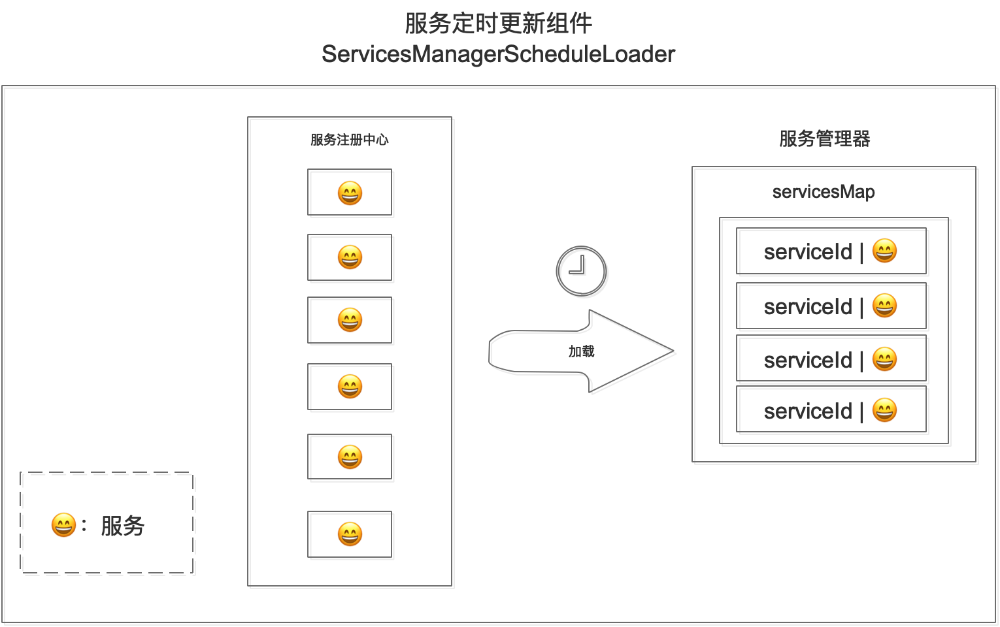
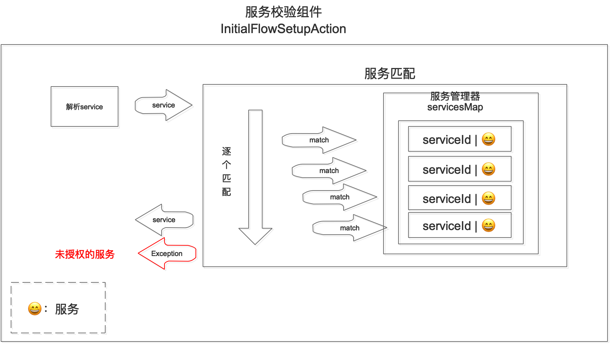
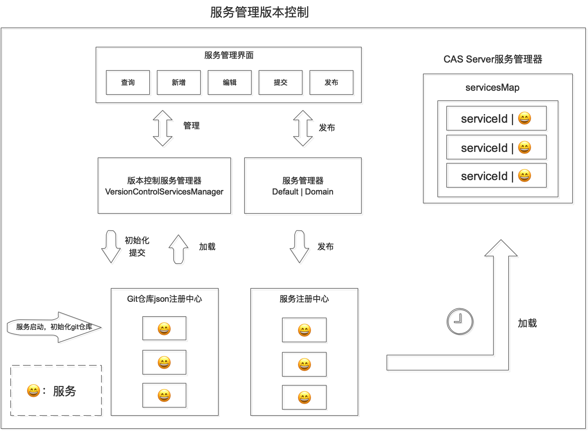

- CAS
实现原理
- CAS服务管理实现原理
CAS服务管理实现原理
通常情况下，我们的单点登录认证中心要支持多个服务的统一认证。我们的实现步骤一般是先配置服务注册中心方案、然后配置授权服务、最后重启服务。
按以上步骤执行完，大部分都可以得到预期的服务管理目的。而有时候在登录的时候会遇到这种提示：未认证授权的服务。对于刚接触CAS的人来说，看到这个提示往往不知道该如何处理。出现这个错误的原因有很多，比如服务加载失败、服务更新失败、serviceID正则表达式写错等等，其实归根结底是一个原因：在登录过程中校验授权服务时，没有找到匹配的服务。
为什么没有匹配到授权服务？
内部的服务管理机制是什么样的？
应该怎么解决？
本文将深入剖析CAS服务管理原理，包括服务管理整体架构、服务初始化过程、服务更新机制、服务校验过程、以及服务管理工具等。通过本文至少可以有以下收获：
- 全面深入的理解CAS中的服务管理原理；
- 可以快速处理实操过程中CAS服务管理相关问题；
CAS服务管理整体架构

如上图所示，CAS服务管理的整体架构可以分为三层：
- 服务注册中心
- 服务管理器
- 服务管理组件
服务注册中心
服务注册中心负责存储授权服务，它支持多种存储方案，如内存、JSON文件、JPA、Redis、MongoDb等等。
CAS中的服务注册中心实现方案通过实现ServiceRegistry接口来实现：

服务管理器
服务管理器负责管理服务注册中心。正是因为有了服务管理器，才实现了服务存储的透明化，使调用方对服务存储方式无感知。也使服务存储更容易扩展，开发者可以根据自己的需求来实现个性化存储。
CAS中的服务管理器实现方案通过实现ServicesManager接口来实现：

服务管理组件
我们在这里将服务管理的调用方的统称为服务管理组件。如登录组件在登录过程中需要通过服务管理器获取授权来校验服务、服务定时器定时更新授权服务、服务初始化组件需要在服务启动时初始化授权服务等等。
服务初始化
启用服务初始化功能后（cas.serviceRegistry.initFromJson=true），服务启动的第一步就是进行服务初始化，其目的是将注册中心中的授权服务加载到服务管理器中。
服务管理器充当访问服务的缓存层，后续的服务访问都要通过服务管理器。

服务的初始化过程包含以下几步：
- 服务启动时，Spring会初始化服务初始化组件，并启动初始化流程；
- 服务初始化组件从配置的目录中加载收取服务，并保存到loadedList中；
- 再将loadedList中的授权服务逐个保存到服务注册中心（已存在的不更新）；（这里是开发人员配置的服务注册中心方案，如redis、jpa等）
- 将服务注册中心中的服务加载到服务管理器中；完成服务初始化。
不同的服务管理器还会基于servicesMap将服务保存到自己的服务集合中，以实现个性化管理策略。
服务更新机制
CAS中的服务更新是通过定时调度来实现的，启用或关闭此功能通过cas.serviceRegistry.schedule.enabled=true/false来控制。

服务的更新过程包含以下几步：
- 服务启动时，Spring容器初始化服务更新定时调度器；
- 服务更新定时调度器根据配置的策略，定时调用；
- 从服务注册中心加载授权服务集合，并将授权服务集合加载到服务管理器中；更新完成。
服务校验过程
安全起见，CAS单点登录的过程中都要进行授权服务的校验。

服务的校验过程包含以下几步:
- 服务启动时，Spring容器初始化服务校验组件
InitialFlowSetupAction，并将其添加到登录流程里； - 每次执行登录流程时，都要先执行
InitialFlowSetupAction，来校验服务； - 首先从请求中解析出service；
- 然后逐个匹配服务管理器中的授权服务；
- 如果匹配到，立即返回授权服务，并将该授权服务带入到上下文中，继续执行登录流程中的其他动作；
- 如果没有匹配到服务，抛出异常，在页面中出现
未认证授权的服务提示。
通过以上的服务校验过程，可以得到以下结论：
- 服务正则表达式一定要拼写正确，否则可能会匹配不到，或者匹配错误。建议配置前现在本地用Java正则表达式测试以下。
- 如果页面出现
未认证授权的服务提示，一定是服务匹配问题，要从这方面找原因和解决方案。
服务管理工具
CAS官方推出的服务管理工具是：CAS Management。我们这里主要介绍CAS Management的功能和实现原理。
了解完服务的加载、更新机制后，如果有个性化需求，我们也可以实现自己的服务管理工具。
CAS Management在实现了服务管理功能基础上，还有两个核心亮点：服务版本控制和委托用户管理。
服务管理基础功能就不介绍了，已经包含在了服务版本控制流程内。
服务版本控制
服务的版本控制是通过在本地建立一个git仓库，然后通过操作这个git仓库，发布后同步到CAS Server服务注册中心中，最后通过服务管理的更新机制，同步到CAS Server中。
服务的版本控制的好处显而易见：
- 保留了服务的历史状态，并可以随时回退到任意历史版本；
- 服务有了中间态，可有效控制服务的发布状态。

服务版本控制流程：
- CAS Management启动后会做两件事情：
- 在本地创建一个git仓库，并以此作为JSON注册中心，创建VersionControlServicesManager；
- 创建CAS Server服务管理器：DefaultServicesManager或DomainServicesManager;
- 管理员增加或编辑服务后，通过操作界面中的
提交按钮提交本次变更； - 提交后就会点亮
发布按钮，发布后会将仓库中的服务通过CAS Server服务管理器同步到CAS Server服务注册中心； - 最后CAS Server通过更新机制，同步到CAS Server服务管理器中。
委托用户管理
CAS Management的委托用户管理功能类似github上的PR，在以上服务版本控制的前面多出了PR的步骤，即：
- 委托用户编辑服务并提交PR；
- 管理员接受或拒绝委托用户的PR；
- 如果管理员接受，就会走以上的服务管理版本控制流程；
- 如果管理员拒绝，则会打回到委托用户，重新编辑。
关于作者
马军伟，草根码农一枚，jbone项目作者。
关注领域：微服务、高并发编程、单点登录等。
Github：https://github.com/417511458
Gitee: https://gitee.com/majunwei2017
QQ: 417511458
公众号：writebugs